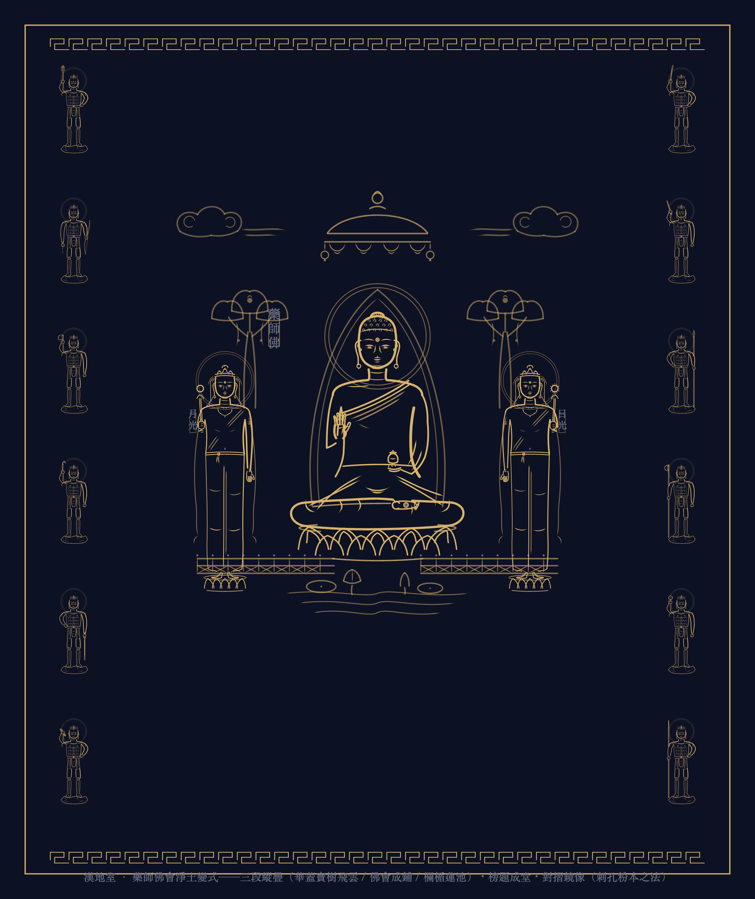
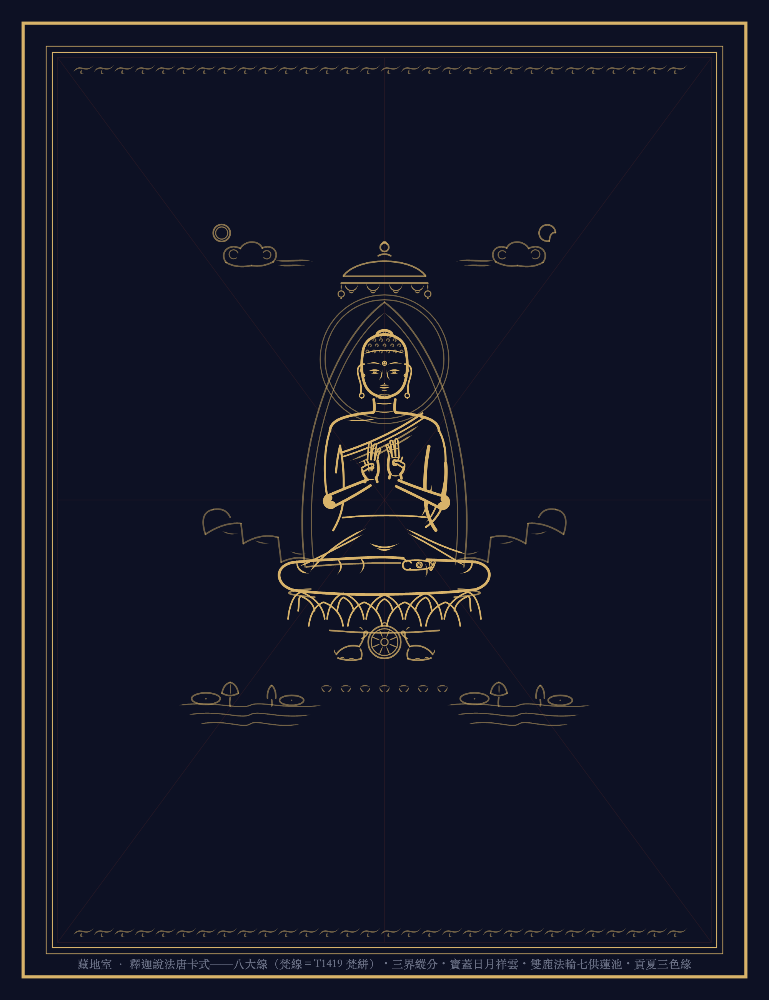
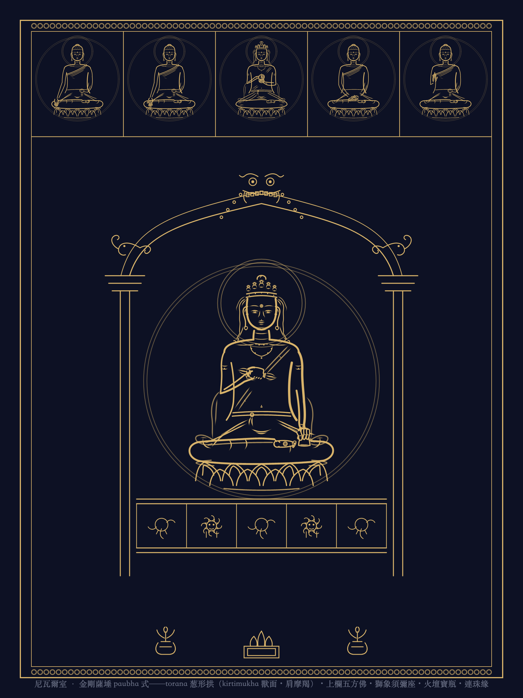

粉本線上博物館
程序造像之藏——如法量度（T1419 百二十指）・儀軌出典・白描無填。
常設：兩界壇城・漢傳諸帖・星供籌備；別館：
諸家競本評卷廳
・
逐尊陳列頁
（朱界者候審）。
互動壇城在
mandala
（Three.js，粉本回填自動上壇）；此館司靜觀與風格之藏。
兩界壇城廳
金剛界・胎藏，皆庫內已核之筆活渲合幀
金剛界成身會三十七尊
五解脫輪之制
下東阿閦・左南寶生・上西彌陀・右北不空成就；四親近向壇心，內外四供四隅，四攝居四門。誦戒 37。賢劫千佛・外金剛部候波。
胎藏中台八葉院九尊
上東之向
八葉蓮華：四方四佛（寶幢・開敷華王・無量壽・天鼓雷音），四隅四菩薩（普賢・文殊・觀音・彌勒），中臺大日法界定印。誦戒 9。
漢傳廳
橫三世・藥師曼荼羅基本式（諸尊候審中）
橫三世佛一幀
唐卡首卷
中釋迦・左西彌陀・右東藥師（面南觀者之位）；舉身光・如意雲・八大線印記。
藥師十五尊一幀
鎌倉本基本式
三尊（日光觀者右・月光觀者左）＋十二神將左右各六（忿怒八搩，持物依作例三源並陳）。
星供廳
中尊金輪＋北斗七真身上壇；九曜以下候筆
星供曼荼羅円制構圖
八真身上壇
進行
一院中尊釋迦金輪（四源，真身上壇）／二院上北斗七（持笏星君真身）下九曜（候筆）／三院十二宮／外院廿八宿。誦戒 57。
歷代風格館
五室開展——同尊異體之藏（docs/風格館總設計.md 為綱；量度是律，風格是貌）
犍陀羅室 · 釋迦說法龕式
貴霜片岩期
首展
判準：衣紋見身體之勢（本庫「精度之的」所宗）・三環同軸（頭光拱楣樹冠）・位階即尺度。 景物：科林斯柱（縱槽莨苕渦卷）・支提葱形拱・菩提樹冠（心形長尾葉）・束帛座板刻雙鹿法輪・連珠帶欄。 朝代軸：貴霜片岩（1–3世紀）→哈達灰泥→斯瓦特餘脈。候補：彌勒交腳・苦行釋迦・燃燈佛授記龕。量度是律，風格是貌。
漢地室 · 藥師佛會淨土變式
元壁畫水陸之制
首展

判準：三段縱疊（虛空／佛會／蓮池平臺）・中軸對稱主大從小・榜題成堂（寶寧寺水陸幅式）・對摺鏡像（敦煌刺孔粉本之法即本庫之法）。 景物：華蓋垂幔・七寶行樹瓔珞・欄楯望柱櫺格・蓮池水波・榜題牌・回紋欄界・如意雲。一鋪十五尊（藥師三尊＋十二神將）——
畫風-漢地
卷廣勝寺藥師佛會之格局。候補：水月觀音・吳家樣蘭葉描釋迦・李公麟鐵線文殊維摩。
藏地室 · 釋迦說法唐卡式
勉唐構圖之律
首展

判準：八大線先行（梵線 tshangs thig＝T1419「梵絣」——漢藏同源之鐵證，幅上淡硃可見）・三界縱分・中尊獨大。 景物：寶蓋（頂珠垂幔垂鈴）・日月雙曜・如意祥雲・青綠山石・雙鹿法輪（說法印應初轉法輪）・七供水碗・蓮池雙側・貢夏三色緣・卷草帶。 派軸：齊烏崗巴→勉唐→欽孜→噶瑪嘎孜→勉薩。候補：綠度母勉唐式（候儀軌考據）・欽孜忿怒大黑天。
東密室 · 大日白描図像葉
院政集成期之制
首展
判準：無肥瘦鐵線（白描図像是自立門類非半成品——
本庫直系法統，本室即自家法統之展
）・三段並列版式（尊像／題記／印相・三昧耶形）・ 素地無景・種子記位之制（月輪空圈候梵書——寧缺毋誤之朱界）。界線三級細分空間，不假濃淡。 候補：十一面別尊雑記式・不動覚禅鈔式・宅間肥瘦線對觀葉（線質之辨最直觀一對）。
尼瓦爾南傳室 · 金剛薩埵 paubha 式
轉承期（Cleveland 1260s 系）
首展

判準：均勻細鐵線・torana 龕（葱形拱＋kirtimukha 獸面＋肩摩羯）・三段龕欄分格・紅底金線轉白描（原作金線之處即本庫墨線）。 景物：上欄五方佛列龕（庫五佛真身）・獅象須彌座・火壇寶瓶・連珠緣。金剛薩埵乃 Vajrācārya 傳承本尊，杵鈴正 paubha 中尊程式——
畫風-南傳尼瓦爾
卷；尼瓦爾正保存金剛界法脈。候補：康提波狀雙線釋迦・蒲甘觸地印・Vasudhārā 1365。